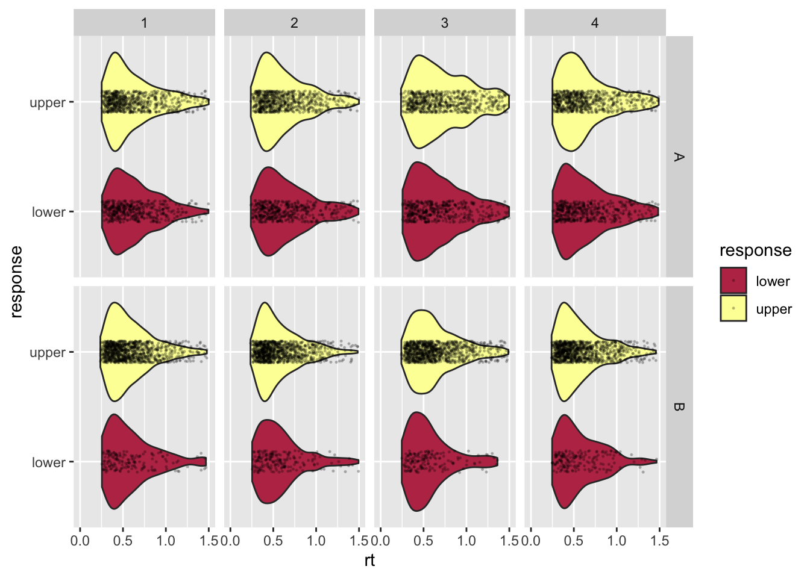
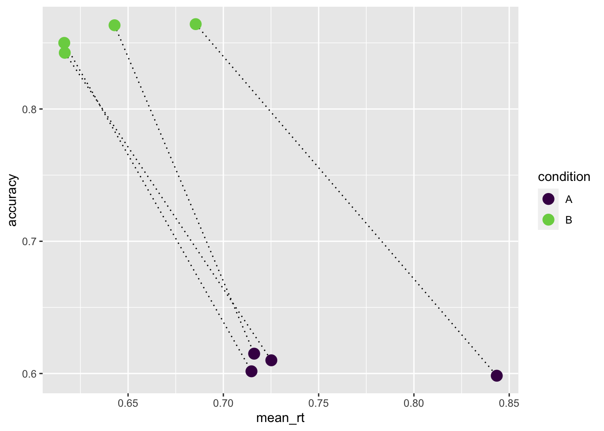

Übung 6: Lösung
DDM Parameter schätzen.
![]()
Aufgabenstellung
In dieser Aufgabe geht es darum, dass Sie einmal selber die Parameter eines DDM an Daten fitten können. Es geht nicht darum, jede Zeile Code zu verstehen; es geht vor allem darum, zu erleben, wie schwierig es sein kann, solche Modelle an Daten zu fitten.
Bitte führen Sie den Code, in dem die Parameter geschätzt werden, mehrmals aus, und kopieren Sie die geschätzten Parameter in ein File. Dies muss abgegeben werden.
Daten einlesen
Downloaden Sie die Daten, und die wahren Parameter (zum Vergleich).
Wir laden die Daten in ein DataFrame, d. Ich habe ein RT Experiment simuliert, in dem 4 Versuchspersonen in 2 Bedingungen (“A” und “B”) getestet wurden. Die experimentelle Manipulation sollte sich vor allem auf einen Parameter unterschieden. In dieser Übung geht es darum, herauszufinden, auf welchen Parameter die Manipulation einen Einfluss hat.
Aufgaben
Führen Sie die Parameterschätzung mehrmals aus, und berichten Sie die resultierenden Parameter. Es kann sein, dass nicht immer dasselbe rauskommt (deshlab machen wir es mehrmals). Welcher Parameter wurde beeinflusst?
Überlegen Sie sich, wie Sie weiterführen würden. Wie können Sie zeigen, dass es in einem Parameter einen Unterschied zwischen den Bedingungen gibt? Wie können Sie zeigen, dass es in den anderen Parameter keine Unterschied gibt? Beschreiben Sie in einem Paragraphen, was Sie sich überlegt haben.
Daten vorbereiten
Wir schauen uns die Daten an:
d |> glimpse()Rows: 9,600
Columns: 4
$ ID <dbl> 1, 1, 1, 1, 1, 1, 1, 1, 1, 1, 1, 1, 1, 1, 1, 1, 1, 1, 1, 1, …
$ condition <chr> "A", "A", "A", "A", "A", "A", "A", "A", "A", "A", "A", "A", …
$ rt <dbl> 0.6888584, 0.3411717, 1.6588621, 0.8845731, 0.7925147, 0.440…
$ response <chr> "lower", "upper", "upper", "upper", "upper", "upper", "lower…Die Variablen ID, condition und response sollten Faktoren sein.
Rows: 9,600
Columns: 4
$ ID <fct> 1, 1, 1, 1, 1, 1, 1, 1, 1, 1, 1, 1, 1, 1, 1, 1, 1, 1, 1, 1, …
$ condition <fct> A, A, A, A, A, A, A, A, A, A, A, A, A, A, A, A, A, A, A, A, …
$ rt <dbl> 0.6888584, 0.3411717, 1.6588621, 0.8845731, 0.7925147, 0.440…
$ response <fct> lower, upper, upper, upper, upper, upper, lower, upper, uppe…Weil es nur 4 VP sind, können wir die RTs von allen in einem Plot anschauen. Die upper Responses können wir hier als korrekte Antworten auffassen, die lower Responses als inkorrekte.
d |>
ggplot(aes(rt, response, fill = response)) +
geom_violin() +
geom_jitter(height = 0.1, alpha = 0.2, size = 0.25) +
scale_fill_viridis_d(option = "B", direction = 1,
begin = 1/2, end = 2/2) +
xlim(c(0, 1.5)) +
facet_grid(condition ~ ID)Warning: Removed 488 rows containing non-finite values (stat_ydensity).Warning: Removed 488 rows containing missing values (geom_point).
Daten zusammenfassen
UM uns einen Überblick zu verschaffen, fassen wir die Daten durch mittlere RT und “Accuracy” zusammen.
summary <- d |> group_by(ID, condition) |>
summarise(mean_rt = mean(rt),
median_rt = median(rt),
accuracy = mean(response == "upper"))`summarise()` has grouped output by 'ID'. You can override using the `.groups`
argument.summary# A tibble: 8 × 5
# Groups: ID [4]
ID condition mean_rt median_rt accuracy
<fct> <fct> <dbl> <dbl> <dbl>
1 1 A 0.716 0.589 0.615
2 1 B 0.643 0.536 0.863
3 2 A 0.725 0.591 0.61
4 2 B 0.617 0.519 0.842
5 3 A 0.843 0.696 0.598
6 3 B 0.685 0.578 0.864
7 4 A 0.715 0.591 0.602
8 4 B 0.617 0.518 0.85 summary |>
ggplot(aes(mean_rt, accuracy, color = condition)) +
geom_line(aes(group = ID), color = "black", linetype = "dotted") +
geom_point(size = 4) +
scale_color_viridis_d(end = 0.8)
In der Grafik sehen wir, dass die Accuracy in Bedingung “B” höher ist. Gleichzeitig ist die mittlere RT niedriger. Das ist ein Hinweis, dass hier kein Speed-Accuracy Tradeoff vorliegen kann. Dies bedeutet, dass die Vpn in der Bedingung “B” sich nicht mehr Zeit nehmen, um die Anzahl korrekter Antworten zu erhöhen.
Negative loglikelihood Funktion definieren
Nun wollen wir für jede Person in den beiden Bedingungen die Parameter des DDM fitten. Wir definieren dafür eine Funktion, welche die negative log likelihood als Output hat.
diffusionloglik <- function(pars, condition, rt, response) {
conditions <- levels(condition)
likelihoods <- vector("numeric", length(rt))
likelihoods <- ddiffusion(rt = rt,
response = response,
a = pars["a"],
v = pars["v"],
t0 = pars["t0"],
z = pars["z"] * pars["a"],
s = 1.0)
if (any(likelihoods == 0)) return(1e6)
return(-sum(log(likelihoods)))
}Startwerte für Maxmimum Likelihood Schätzung
Für die Minimierung brauchen wir Anfangswerte. Diese werden für jeden zu schätzenden Parameter zufällig gewählt.
Maxmimum Likelihood Schätzung
Nun definieren wir zuerst ein paar Variablen.
Und nun schreiben wir eine zweifache for-Loop, über die Versuchspersonen, und über die Bedingungen innerhalb der Personen.
Führen Sie diesen Teil mehrmals aus.
p <- vector("list", n_participants)
for (i in seq_along(participants)) {
estimates <- array(NA, c(n_conditions, n_pars))
colnames(estimates) <- c("a", "v", "z", "t0")
rownames(estimates) <- c("A", "B")
for (j in seq_along(conditions)) {
data <- filter(d, ID == i, condition == conditions[j])
fit <- nlminb(init_params(),
diffusionloglik,
lower = 0,
condition = data$condition,
rt = data$rt,
response = data$response)
estimates[j, ] <- fit$par |> round(3)
}
p[[i]] <- estimates
}Geschätzte Parameterwerte
Die geschätzten Parameter sind in einer List gespeichert.
p[[1]]
a v z t0
A 1.439 0.261 0.523 0.206
B 0.633 1.993 0.518 0.279
[[2]]
a v z t0
A 0.659 0.00 0.489 0.271
B 1.427 1.18 0.499 0.202
[[3]]
a v z t0
A 1.631 0.284 0.484 0.188
B 0.325 1.322 0.487 0.271
[[4]]
a v z t0
A 1.436 0.237 0.517 0.203
B 1.439 1.207 0.497 0.196In dieser Liste finden wir die geschätzten Parameter (a, v, z, t0) in den Bedingungen “A” und “B”. Jede Person ist ein Element dieser Liste, d.h. p[[1]] ist die erste Person.
p[[1]] a v z t0
A 1.439 0.261 0.523 0.206
B 0.633 1.993 0.518 0.279Bei der ersten Versuchsperson lässt sich folgendes Muster erkennen: zwischen den Bedingungen “A” und “B” unterscheidet sich die Drift Rate v ziemlich stark (0.261 vs 1.993). Die anderen Parameter unterscheiden sich wenig zwischen den Bedingungen. Wir müssen hier aber vorsichtig sein: unser DDM braucht sehr viele Daten, um die Parameter zu schätzen. Es kann vorkommen, dass das Model zu flexibel ist, und “glaubt”, Merkmale der RT Verteilungen beispielsweise durch eine Kombination von Bias and Boundary Separation erklären zu können, obwohl der eigentlich verantwortliche Parameter die Drift Rate wäre (so wie hier). Deshalb habe ich die Anweisung gegeben, die Parameterschätzung mehrmals durchzuführen.
Wenn wir alle Vpn anschauen, scheint der Drift Rate-Unterschied zwischen den Bedingungen systematisch zu sein, die Parameter variieren wenig (ausser manchmal a; z und t0 variieren kaum). Vor allem sind die Unterschiede nicht systematisch. Wenn wir mehr als nur 4 Personen hätten, könnten wir dies statistisch untersuchen (siehe Übung 7).
Idealerweise würden wir hier ein Model verwenden, in welchem nur die Drift Rate zwischen den Bedingungen variieren kann, während die anderen Parameter konstant bleiben; dies wäre aber Programmiertechnisch ein wenig anspruchsvoller.
Vergleich mit wahren Werten
Die “wahren” Parameterwerte, das heisst die Werte mit denen die Daten erzeugt wurden, sehen für die 4 Vpn so aus. v1 und v2 entsprechen hier den Drift Rates in den Bedingungen “A” (v1) und “B” (v2).
Die wahren Werte der anderen Parameter unterscheiden sich nicht zwischen den Bedingungen. Dies bedeudet, dass die unterschiedlichen Schätzungen natürlich nur auf Schätzfehler und andere Fehlerquellen zurückzuführen sind.
participant_params# A tibble: 4 × 6
ID a v1 v2 z t0
<dbl> <dbl> <dbl> <dbl> <dbl> <dbl>
1 1 1.48 0.301 1.19 0.515 0.199
2 2 1.48 0.299 1.23 0.495 0.199
3 3 1.57 0.277 1.21 0.484 0.197
4 4 1.47 0.296 1.23 0.498 0.195In der Bedingung “B” ist die Drift Rate viel höher als in der Bedingung “A”. Dies führt dazu, dass die RTs in der Bedingung “B” kürzer sind, und gleichzeitig die Fehlerrate kleiner.
Reuse
Citation
@online{ellis2022,
author = {Andrew Ellis},
title = {Übung 6: {Lösung}},
date = {2022-05-10},
url = {https://kogpsy.github.io/neuroscicomplabFS22//pages/solutions/solution_06.html},
langid = {en}
}